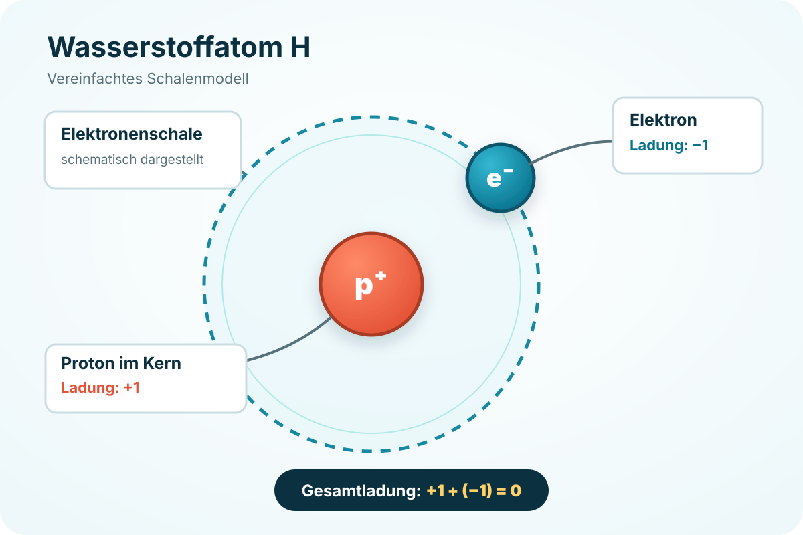

Erklärung 1/2
Das Wasserstoffatom: klein, aber entscheidend
Ein Wasserstoffatom besitzt im Kern ein Proton und in seiner Hülle ein Elektron. Die Ladungen gleichen sich aus: Das Atom ist insgesamt neutral.
Proton: +1+Elektron: −1=Gesamtladung: 0
